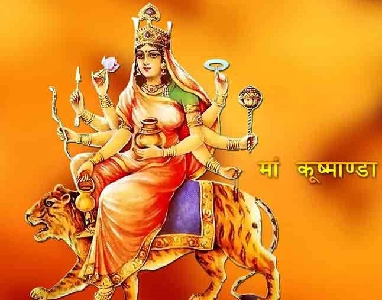

Durga Puja
Day 4

Kushmanda is a Hindu goddess, credited with creating the world with her divine smile. Followers of the Kalikula tradition believe her to be the
fourth form of the Hindu goddess Durga. Her name signals her main role: Ku means "a little", Ushma means "warmth" or "energy" and Anda means "cosmic egg".
Affiliation: Avatar of Parvati
Abode: Kailasa
Planet: Surya
Mantra: सुरासम्पूर्णकलशं रुधिराप्लुतमेव च। दधाना हस्तपद्माभ्यां कूष्माण्डा शुभदास्तु मे॥
Weapon: Lotus, Chakra, Kamandalu, Dhanusha (Bow), Arrow, Gada (Mace), Akshamala (Rosary), Jar of holy Elixir i.e. Sura and blood
Mount: Tiger
Consort: Shiva